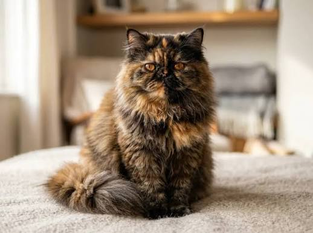
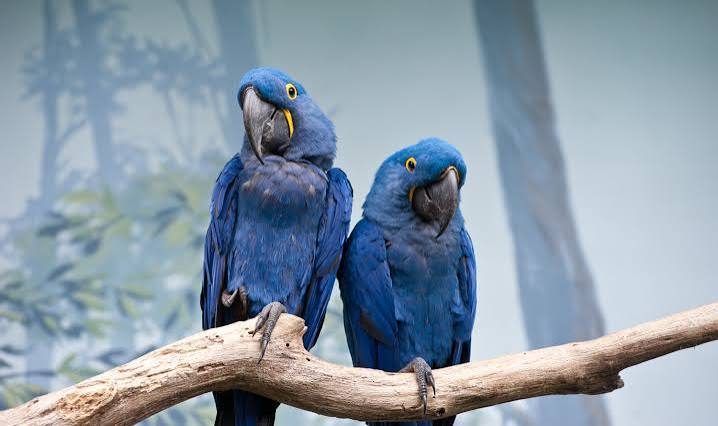
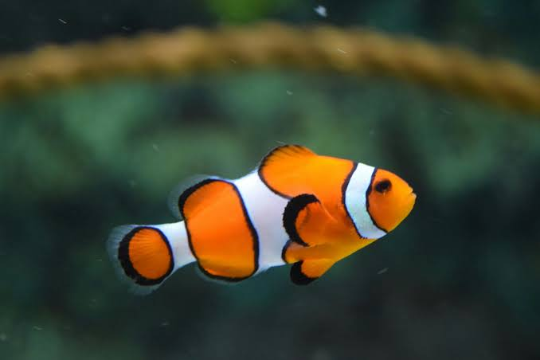
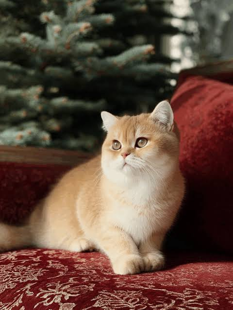
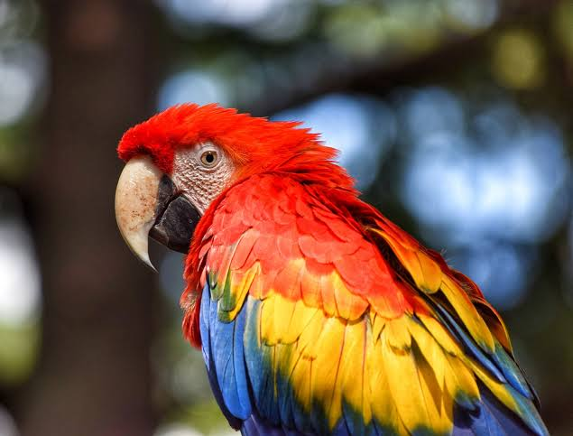
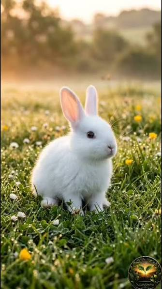
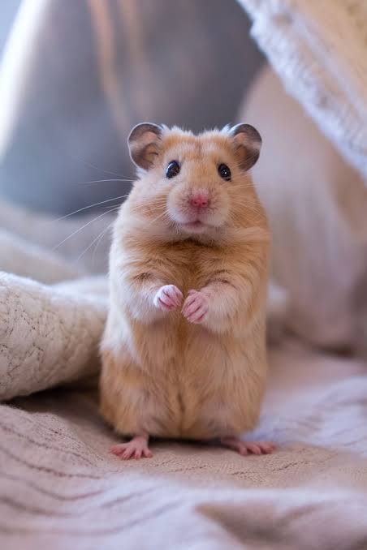
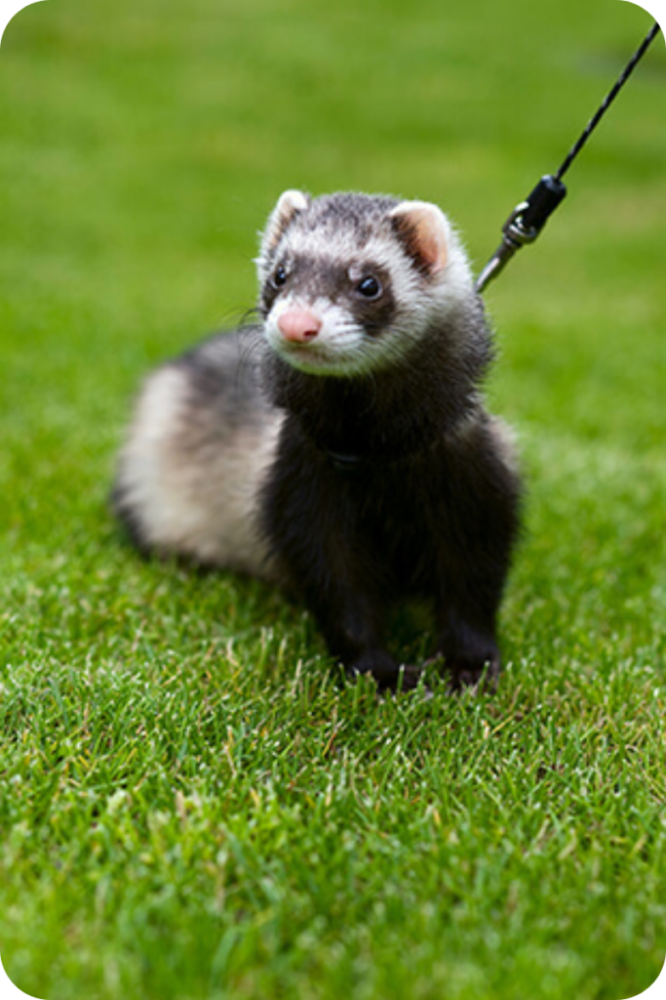

Golden Retrievers are among the most friendly and
intelligent dog breeds. They are loyal, playful,
and ideal for families with children.
Golden Retrievers are well known for their gentle
temperament and strong ability to build close
relationships with humans. Their friendly nature
makes them excellent family pets and trusted
companions for people of all ages.
Persian Cat

Persian Cats are admired for their elegant looks,
peaceful personality, and loving behavior. They
enjoy spending time with their owners and prefer
comfortable indoor environments.
These cats are highly adaptable and can become
wonderful companions for families and individuals.
With proper care and attention, Persian Cats can
live long and healthy lives while providing years
of companionship.
Colorful Parrot

Colorful parrots are admired for their vibrant
feathers, intelligence, and playful behavior.
They enjoy interacting with people and can form
strong bonds with their caretakers.
Many parrot species can imitate sounds and learn
simple words through regular interaction. Proper
care, balanced nutrition, and daily activity help
parrots remain healthy and active throughout their
lives.
Aquarium Fish

Aquarium fish create a peaceful and attractive
atmosphere in homes, offices, and public spaces.
Their colorful appearance and graceful movements
make them enjoyable to observe.
Maintaining an aquarium involves monitoring water
quality, providing proper nutrition, and ensuring
a clean environment. With suitable care, aquarium
fish can thrive and remain healthy for many years.
Featured Pet Gallery
Labrador Puppy

British Shorthair

Macaw Parrot

White Rabbit

Hamster

Ferret
Pet Adoption Guidelines
Adopting a pet is a long-term responsibility that requires love,
patience, and proper care. Before adopting a pet, families should
ensure they have sufficient time, space, and resources to provide
a healthy lifestyle. Pets need balanced nutrition, regular
exercise, proper shelter, and routine veterinary care.
At PawParadise Pet Hub, every pet undergoes health monitoring and
receives the attention necessary to adapt comfortably to a new
environment. Our staff helps pet owners select suitable pets based
on their lifestyle and experience.
Pet Nutrition and Health
Proper nutrition plays an important role in maintaining the overall
well-being of pets. High-quality food provides essential nutrients
that support growth, immunity, and energy levels. Fresh drinking
water should always be available for every pet.
Regular veterinary checkups help detect health issues early and
ensure pets receive timely vaccinations. Preventive healthcare
contributes significantly to the longevity and happiness of pets.
Training and Socialization
Training helps pets develop good behavior and improves
communication between pets and owners. Basic obedience training
allows dogs and other pets to understand commands and interact
effectively with family members.
Socialization is equally important because it helps pets become
comfortable around people, new environments, and other animals.
Well-socialized pets tend to be more confident and easier to
manage.
Benefits of Keeping Pets
Provides companionship and emotional support.
Reduces stress and anxiety.
Encourages physical activity.
Teaches responsibility and discipline.
Improves social interaction and communication skills.
Creates memorable family experiences.
Popular Pet Breeds
Pet Type
Popular Breed
Characteristics
Dog
Golden Retriever
Friendly and Loyal
Cat
Persian Cat
Calm and Gentle
Bird
Macaw Parrot
Colorful and Intelligent
Fish
Goldfish
Easy to Maintain
Rabbit
Dutch Rabbit
Friendly and Playful
Customer Success Stories
Hundreds of families have found their ideal pets through
PawParadise Pet Hub. Many customers appreciate the friendly staff,
healthy pets, and professional guidance available throughout the
adoption process.
Our commitment to quality care and customer satisfaction has helped
us become a trusted choice among pet lovers. We continue to support
pet owners by providing valuable information and services that
improve the lives of both pets and families.
Future Vision
PawParadise Pet Hub aims to expand its pet care services and create
greater awareness about responsible pet ownership. We strive to
build a caring community where every pet receives love, protection,
and a happy home.